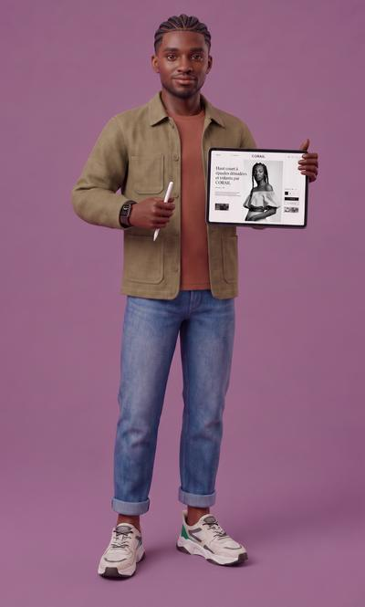

Mon équipeKoffiRoutines

KoffiDesign et marque
Il habille votre marque, du logo au site.

KoffiDesign et marque
Routines de Koffi
Ce que Koffi fait sans qu’on le demande. Le résultat arrive dans tous ses canaux.
Routines actives
Contrôle de la charte
Vérifie les visuels publiés hier contre la charte de chaque marque.
Chaque jour ouvré à 09:00, Africa/AbidjanProposées par Koffi
Activez-les en un clic, vous les modifiez ensuite.
Déclinaisons de la semaine
Décline les visuels validés aux formats de chaque réseau.
Chaque lundi à 10:00